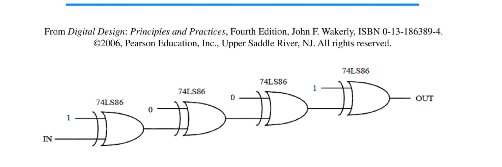

Week 7 — Combinational Modules: Comparators & Adders
Lecture: "Combinational Logic Modules" continued (slides 248–273) · Tutorial 7
This page interleaves each idea with the question that tests it — learn a small piece, then use it immediately. Prefer one long read top-to-bottom instead? → Classic layout
Comparators: is A bigger, smaller, or equal to B?
Start with the simplest possible case — comparing two single bits, a and b:
| a=b | ā·b̄ + a·b — true when both bits match. Notice this is exactly XNOR. |
|---|---|
| a>b | a·b̄ — true only when a=1 and b=0. |
| a<b | ā·b — true only when a=0 and b=1. |
Extending to multi-bit numbers, define a per-bit "these two bits match" signal Si = AiBi + Āi B̄i (this is exactly the a=b XNOR pattern, applied bit by bit).
Two 4-bit numbers are equal only if every single bit position matches — a plain AND of all the per-bit "match" signals.
Two tutorial questions are ready now — one is independent revision, one directly tests the equality comparator you just built.

Find the typical propagation delay IN→OUT through this 4-gate 74LS86 (XOR) chain, for both transition directions.
Try it yourself first, then reveal the answer
Each gate here is wired as either an inverter (XOR with a constant 1 flips the signal) or a buffer (XOR with a constant 0 passes it straight through) — work out, stage by stage, whether that gate's output is rising or falling given the direction IN is changing, and add up the correct tpLH or tpHL for that specific gate from the datasheet each time (never mix up the two — a gate whose output is falling needs tpHL, never tpLH, regardless of which direction IN itself is moving). This exact chain is a known example (from Wakerly's textbook) chosen specifically because the two middle "pass-through" gates receive their toggling signal on a different input pin than gates 1 and 4 — real 74LS86 datasheets specify slightly different delays depending on which input pin is switching, which is why the table distinguishes rows.
Answer: 53ns and 57ns for the two directions (as given) — the exact number matters less here than the discipline of tracking, gate by gate, which direction that stage's output is moving and picking the matching datasheet column every time.
Design an 8-bit comparator using XOR gates and a NOR gate, outputting 1 when the numbers are equal. Test A=B=11011001, and A=10101110 vs B=11101110.
Try it yourself first, then reveal the answer
XOR each corresponding bit pair (Ai,Bi) for i=0..7 — each XOR outputs 0 exactly when that bit pair matches, 1 when it differs. Feed all 8 XOR outputs into one 8-input NOR gate: the NOR only outputs 1 when every one of its inputs is 0, i.e. every single bit pair matched.
Test 1 (A=B=11011001): every bit pair matches, all 8 XORs output 0, NOR(0,0,…,0)=1 → correctly reports "equal".
Test 2 (A=10101110, B=11101110): comparing bit by bit, the second bit from the left differs (A has 0, B has 1) — that XOR outputs 1, so the NOR gate immediately outputs 0 → correctly reports "not equal", regardless of how many of the other 7 bits happen to match.
A>B: comparing from the most significant bit down
This is the same logic you already use mentally when comparing two numbers by eye: look at the most significant bit first; if it already decides the answer, stop — otherwise move to the next bit down.
What it calculates: whether A is strictly greater than B, using the same MSB-down logic explained above. When to use it: any time you need the full 3-output (A>B / A<B / A=B) comparator, not just equality. Condition: a bit position's term only turns on once every higher bit has tied — the same "keep looking until it's decided" rule as the price-comparison analogy below.
| A3B̄3 | bit 3 alone already proves A>B (A's MSB is 1, B's is 0) — every lower bit is irrelevant, hence no S-terms needed here. |
|---|---|
| S3A2B̄2 | bit 3 was a tie (S3=1), so it's still undecided — now bit 2 decides it, the same "A=1,B=0" pattern one level down. |
| (pattern continues) | each term requires every higher bit to have tied (all those S's = 1) before that bit position is allowed to be the deciding one. |
YA<B is the exact mirror image (swap every AiB̄i for ĀiBi).
The 7485: a real chip, built to be chained together
The 7485 is a 4-bit magnitude comparator IC with 3 extra cascading inputs (IA>B, IA<B, IA=B) that let you chain multiple 7485s to compare wider numbers (8-bit, 12-bit, …) — feed the lower-order chip's outputs into the higher-order chip's cascading inputs, so the higher bits' decision can be overridden only when the higher bits tied and the lower bits need to settle it. For a single 4-bit comparison with no chaining, the cascading inputs are set to the "start of comparison" default: IA=B=1, IA>B=IA<B=0 (i.e. "assume equal so far, let the actual bits decide").
Now that you have both the MSB-down comparator and the 7485's cascading inputs, Tutorial 7 Q3 is ready.
Design a comparator for two 5-bit 2's complement numbers using a 7485 (4-bit, unsigned) plus basic gates.
Try it yourself first, then reveal the answer
The key insight: within the same sign, comparing the raw bit patterns as if they were plain unsigned numbers gives the correct signed ordering (e.g. -16=10000 and -1=11111 — as unsigned patterns 16<31, and indeed -16<-1). The only place plain unsigned comparison gets it backwards is across the two sign groups (a negative number's bit pattern looks "big" as unsigned, even though it should count as smaller). So: feed the 4 magnitude bits directly into the 7485 with default cascading inputs (assume equal-so-far), then override its result using the sign bits SA,SB: if the signs differ, the number with sign=0 (positive) wins outright, no need to even look at the 7485's answer; if the signs match, trust the 7485's comparison of the remaining 4 bits directly.
YA<B = SAS̄B + (SA⊙SB)·(7485's YA<B)
YA=B = (SA⊙SB)·(7485's YA=B)
(⊙ is XNOR — "signs match". S̄ASB means A is positive and B is negative, so A wins immediately.)
Adders: half, full, ripple, and carry-look-ahead
| Half Adder (HA) | adds exactly 2 single bits (a,b), producing sum s=a⊕b and carry c=a·b. Cannot handle a carry coming in from a previous column — that's the "half" it's missing. |
|---|---|
| Full Adder (FA) | adds 3 bits (a, b, and carry-in ci), producing sum s=a⊕b⊕ci and carry-out co=ab+bci+aci. This is the real building block, because every column of a multi-bit addition (except possibly the very first) has a carry coming in. |
A neat identity: a full adder is literally just two half adders chained together, since co = ab + ci(a⊕b) — the first HA computes a⊕b and a·b; the second HA adds ci to that sum; the two carry outputs OR together for the final carry-out.
With half and full adders in hand, Tutorial 7 Q4 is ready.
Design a 4-bit incrementer (adds 1) using four half adders, and a 4-bit decrementer (subtracts 1) using four full adders.
Try it yourself first, then reveal the answer
Incrementer: adding the constant 0001 means B=0 for three of the four bit positions — and a full adder with one input permanently tied to 0 has no real use for that input, so it collapses into a plain half adder at every stage except needing a carry chain: HA0(A0, constant 1) → S0, C1; then HA1(A1, C1) → S1,C2; HA2(A2,C2)→S2,C3; HA3(A3,C3)→S3. Every stage only ever has 2 genuinely active inputs, which is exactly what a half adder provides — no wasted third input.
Decrementer: subtracting 1 is the same as adding −1, and −1 in 4-bit 2's complement is 1111 — meaning Bi=1 at every bit position, not just the LSB. Since every stage now has three genuinely active inputs (Ai, the constant 1, and a real carry-in), every stage needs a full, 3-input full adder: FA0(A0,1,0)→S0,C1; FA1(A1,1,C1)→S1,C2; and so on through FA3. This contrast (half adders suffice for +1, but full adders are required for −1) is the entire point of the exercise.
Ripple adder: simple, but slow
Chain n full adders together (carry-out of stage i feeds carry-in of stage i+1) and you can add two n-bit numbers. The problem: the worst-case addition (e.g. 1111+0001) forces the carry to ripple through every single stage before the final answer is stable — delay grows linearly with the number of bits, which becomes a real bottleneck for wide (32-bit, 64-bit) adders.
Carry-Look-Ahead (CLA): predict the carries instead of waiting for them
Redefine each bit position's contribution using two new signals:
Ci+1 = Gi + PiCi
What it calculates: Pi and Gi depend only on the original inputs Ai,Bi at that one bit position; Ci+1 here is still written recursively in terms of the previous carry Ci. When to use it: as the starting definitions, before the expansion below removes that Ci dependency and lets every carry be computed straight from the inputs.
| Gi (Generate) | this bit position creates a carry all by itself, regardless of any incoming carry — true whenever both Ai and Bi are 1. |
|---|---|
| Pi (Propagate) | this bit position doesn't generate a carry on its own, but if a carry arrives from below, it passes it straight through. |
The trick: keep substituting Ci = Gi-1+Pi-1Ci-1 back into itself repeatedly, and every carry can be rewritten purely in terms of the original inputs (P's and G's), with no dependency on the previous stage's carry actually having settled first:
C3 = G2 + P2G1 + P2P1G0 + P2P1P0C0
Every carry can now be computed in parallel, simultaneously, straight from the inputs — at the cost of needing bigger, wider gates (more literals per term as you go further along the chain) — the classic engineering trade: speed bought with extra hardware.
✍️ Write This Down
Copy these into your own notes:
- Bit-level: a=b is XNOR; a>b is ab̄; a<b is āb.
- Multi-bit equality: AND together every bit position's own "match" signal Si.
- Multi-bit >/<: compare from the MSB down; a lower bit only gets to "decide" if every higher bit tied (all its S-terms =1).
- Half adder: 2 inputs, s=a⊕b, c=ab. Full adder: 3 inputs, s=a⊕b⊕ci, co=ab+bci+aci. A full adder = two half adders chained.
- Ripple adder: simple, but delay grows linearly with bit-width because each stage waits for the previous stage's carry.
- Carry-Look-Ahead: Pi=Ai⊕Bi (propagate), Gi=AiBi (generate), Ci+1=Gi+PiCi — every carry can be expanded back to depend only on the original inputs, enabling parallel (not rippled) computation, at the cost of more/bigger gates.
- Comparing signed (2's complement) numbers with an unsigned comparator: same-sign comparisons work directly on the bit pattern; different-sign comparisons must be special-cased (positive always wins).
- A full adder degrades into a half adder whenever one of its three inputs is a hard-wired constant 0 — recognising this saves real hardware (as in the incrementer above).
🟥 Redstone Build: A Working Redstone Adder
This is the payoff build for the whole course — a real binary adder, built entirely from the gates you've made since Week 2. Redstone half/full adders are one of the most popular "serious" builds in the whole game for exactly this reason.
Build 1 — Half Adder
- Build an XOR gate (Week 2, Build 5) fed by inputs a, b → this is your sum output s.
- Build an AND gate (Week 2, Build 4) fed by the same inputs a, b → this is your carry output c.
- Test all 4 input combinations against the half-adder truth table (00→s0c0, 01→s1c0, 10→s1c0, 11→s0c1) using lamps on s and c.
Build 2 — Full Adder (from two Half Adders)
- Feed inputs a, b into your first Half Adder, producing an intermediate sum s₁ and carry c₁.
- Feed s₁ and the actual carry-in ci into a second Half Adder, producing the final sum s and a second carry c₂.
- OR c₁ and c₂ together (Week 2, Build 2) to get the final carry-out co — this directly implements co=ab+ci(a⊕b) from the slides, built exactly the way the lecture derives it.
- Verify against the full-adder truth table (8 rows) using a lamp on s and a lamp on co.
Build 3 — 4-bit Ripple Adder
- Build 4 copies of your Full Adder from Build 2, laid out in a row.
- Wire each stage's carry-out directly into the next stage's carry-in (stage 0's co → stage 1's ci, and so on) — physically visible "rippling", exactly like the lecture's timing diagram.
- Feed in two 4-bit numbers via 8 levers (A3..A0, B3..B0), tie the very first carry-in to 0, and read the 4 sum bits plus final carry-out on 5 lamps.
- Try the lecture's worst-case example, 1111+0001, and watch the carry visibly ripple through all 4 stages before the lamps settle — a direct, physical demonstration of exactly why ripple adders are "simple but slow", tying straight back to Week 3's propagation delay.
Stretch goal: if you want to push further, try building one stage of the Carry-Look-Ahead adder (compute Pi, Gi, and Ci+1=Gi+PiCi directly) and compare how much extra redstone it costs versus one ripple-adder stage — a hands-on feel for the real engineering trade-off between speed and hardware cost.